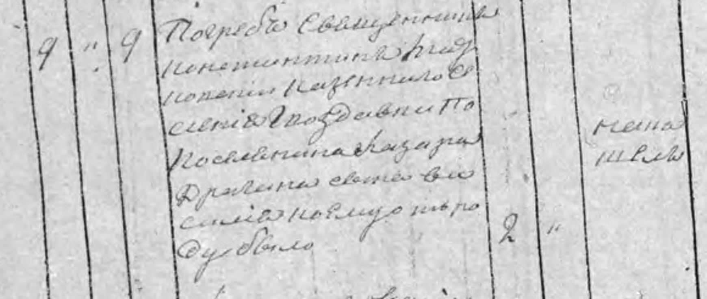

Гвоздавка · поховання 9 / 21 червня 1823 року
Батько названий прямо. Мати не названа. Ототожнення Лазаря з Лазарем Івановичем із дерева ще потребує перевірки.

СЕМІОН, ДВОРІЧНИЙ СИН ЛАЗАРЯ ДАДУЛА — ГВОЗДАВКА, 1823 Знайдено та візуально перевірено Codex 15 листопада 2026 року. НОВИЙ ДОКУМЕНТ 9 червня 1823 року ст. ст. / 21 червня 1823 року н. ст. у метричній книзі Гвоздавки записано поховання дворічного Семіона, сина поселянина Лазаря Дадула. Прямий зв’язок «Лазар Дадул — батько Семіона» підтверджений самим текстом. По батькові Лазаря та ім’я матері дитини не наведені. Зв’язок із Лазарем Івановичем, батьком Іова 1835 року, і далі з прямою лінією Ольги Пачесної залишається гіпотезою, хоч збіг імені, рідкісного прізвища, парафії та часу робить запис перспективним. ТОЧНЕ ДЖЕРЕЛО Державний архів Одеської області, фонд 37, опис 3, справа 269. Михайлівська церква казенного селища Гвоздавки, 1823 рік, частина третя, чоловічий запис № 9. У файлі DjVu на сайті ДАОО: зображення 653, лівий аркуш, другий запис згори. Нумерація цифрових зображень від 1; це не номер аркуша справи і не кадр FamilySearch. Назва парафії та 1823 рік: зображення 643, праворуч. Заголовок «Месяцъ Іюнь» міститься на попередньому зображенні 652, праворуч. На 653 після запису Семіона починається липень. У графі числа навпроти Семіона — 9. Повний офіційний файл: https://archive.od.gov.ua/wp-content/old-files/EL_ARH/M/0037/0037_03/0201-0300/0037_03_0269_DAOO.djvu Каталог, який локалізує розділ Гвоздавки від зображення 643: https://uk.wikisource.org/wiki/Архів:ДАОО/37/3/269 ЧИТАННЯ ЗАПИСУ «Погребъ священникъ Константинъ Матковскій казеннаго селенія Гвоздавки поселянина Лазаря Дадула сына его Семіона, ему отъ роду было [2]». Транскрипція ручна, пунктуація впорядкована, число віку перенесене з сусідньої колонки. Читання імені — Семіон (сучасна відповідність Семен / Симеон). У графі віку чоловічої статі стоїть 2. Причина записана як «натуральная»; конкретного сучасного діагнозу це не встановлює. Місце поховання в загальній колонці — кладовище Воскресіння Христового; точне місце могили невідоме. ДАТА СМЕРТІ ЧИ ПОХОВАННЯ Друкована форма має заголовок «Числа умерших», але сам священник пише «Погребъ». Тому 09/21.06.1823 надійно фіксуємо як дату запису з формулою поховання. Окремої дати смерті документ не дає; не створювати дві незалежні точні дати. Різниця календарів для червня 1823 року — 12 днів. ЩО МОЖНА ВНЕСТИ Ім’я: Семіон, нормалізовано також Семен/Симеон. Батько: Лазар Дадул; по батькові батька невідоме саме з цього документа. Вік: 2 роки за записом, точна тривалість життя не обчислена. Народження: орієнтовно 1820–1821 роки, якщо вік указує повні роки; це пошуковий інтервал, не встановлена дата. Вік міг бути приблизним. Парафія і місце проживання батька: казенне селище Гвоздавка. Місце народження дитини окремо не зазначене. Поховання/дата запису: 9 червня ст. ст. / 21 червня н. ст. 1823. Мати: невідома. Євдокію, відому дружину Лазаря за іншими метриками, не вписувати автоматично. Не ототожнювати цю дитину із Семіоном/Семеном, сином Івана Дадула, відомим з ревізії 1795 року або поховання 1811 року: інший батько та покоління. ПЕРЕВІРКА НОВИЗНИ Порівняно з опублікованим текстом родоводу на коміті bc124f3773549c3894ccf12920426086440031c6. У картці sib_lazar перераховані Фотина 1818, Калістрат 1820, Гавриїл 1824–1828, Терентій 1828, Іов 1835 та Йосип близько 1824 зі знаком питання. Семіона з поховання 1823 року в опублікованому переліку та текстових згадках не знайдено. Неопубліковані нотатки Claude ця перевірка не охоплює. ПОДАЛЬША ПЕРЕВІРКА Знайти народження Семіона у Гвоздавці близько 1820–1821 року, щоб отримати матір і зіставити батька з родиною Лазаря та Євдокії. Для 1821 року каталог дає ДАОО 37/3/240, DGS 103559285, початок Гвоздавки на зображенні FamilySearch 388, наступна парафія від 398. У завантаженому DjVu Гвоздавка фактично займає зображення 385–394; заголовок перевірено. Усі 50 народжень (27 чоловічих, 23 жіночих) переглянуті: Семіона, сина Лазаря Дадула, не ідентифіковано. Отже, 1821 рік уже перевірено в цій копії; наступне вікно — 1820 та, з урахуванням приблизного віку, сусідні роки. Каталог: https://uk.wikisource.org/wiki/Архів:ДАОО/37/3/240 Якщо запис не знайдеться в цьому вікні, розширити пошук з урахуванням приблизного віку та можливих пропусків книги. ЖУРНАЛ ПЕРЕГЛЯДУ 15.11.2026 1821, Гвоздавка, 37/3/240, архівний DjVu 385–394: переглянуто заголовок, 50 народжень (27 чоловічих, 23 жіночих), 7 шлюбів і 33 смерті/поховання (14 чоловічих, 19 жіночих), звірено підсумок. Народження Семіона Лазаря Дадула не ідентифіковано. Повної поіменної транскрипції не зроблено. 1823, Гвоздавка, 37/3/269: звірено заголовок на DjVu 643; переглянуто всі 14 шлюбів на 649 праворуч — 651 ліворуч. Шлюб Йосипа Кондратовича Пачесного з Варварою Максимівною не ідентифіковано. Частина смертей/поховань на 651 праворуч — 655 ліворуч переглянута повністю: 34 записи (19 чоловічих, 15 жіночих), що збігається з підсумком. Тут знайдений Семіон. Народження переглянуті лише на 643 і 649; зображення 644–648 ще не перевірені. 1824, Гвоздавка, 37/3/281: звірено обкладинку, заголовок парафії на DjVu 591, усі 13 шлюбів на 597 праворуч — 599 ліворуч. Потрібного шлюбу Йосипа з Варварою не ідентифіковано. Смерті/поховання на 599 праворуч — 601 ліворуч переглянуті: 24 записи (13 чоловічих, 11 жіночих), підсумок 601 праворуч. Нової надійної цільової згадки не встановлено. Народження переглянуті лише на 591, 596–597; 592–595 не перевірені. Це ручний пошук родинних згадок, не повна поіменна транскрипція. Негативний результат не виключає іншої копії книги, парафії чи року. Пошук шлюбу не завершений за всім вікном 1823–1842. ОКРЕМЕ ПИТАННЯ ДЛЯ ПЕРЕВІРКИ У книзі 37/3/281 за 1824 рік шлюб № 2 — інша пара (13 січня), тоді як на сайті запис Кондрата Рублі й Тетяни Доги описаний як 20 січня 1824, № 2. На збереженому кадрованому скані Рублі рік не видно. Потрібно звірити повний заголовок його джерела: можлива інша копія/парафія або помилка року. Поки не вважати розбіжність доказом помилки Claude і не змінювати дату шлюбу в дереві.